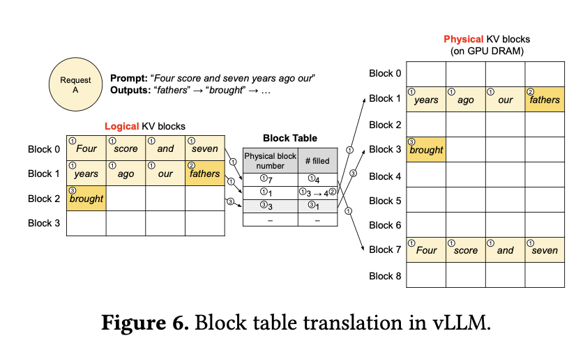

PagedAttention¶
- Paper: https://arxiv.org/abs/2309.06180
- System: https://github.com/vllm-project/vllm
KV Cache: Core Principle¶
In autoregressive generation with a decoder-only Transformer, given a request with prefix token sequence
the model computes the next-step conditional distribution
The key point is not the token id by itself, but the context in which it appears. In an attention layer, keys and values are not static objects looked up from the vocabulary. They are projections of the hidden state at that position; once the representation has passed through causal self-attention, that hidden state becomes a contextualized representation.
1. Why the same token id can have different K/V¶
Let the input hidden states to layer \(\ell\) be
Then the query, key, and value at layer \(\ell\) are typically written as
The important point is that \(h_t^{(\ell-1)}\) is not a simple function of the token id \(x_t\). It is the result of applying the preceding layers to the entire prefix \(x_{1:t}\). More precisely, under a causal mask,
therefore
This means that even if two requests have the same token id at position \(t\),
as long as their prefixes differ,
then, after at least one contextualizing layer, one typically has
$$ h_t^{(\ell-1,a)} \neq h_t^{(\ell-1,b)}, \qquad k_t^{(\ell,a)} \neq k_t^{(\ell,b)}, \qquad v_t^{(\ell,a)} \neq v_t^{(\ell,b)} $$ in general.
So KV cache is not “a fixed K/V attached to a token id.” Instead, it stores:
- for a specific request,
- under a specific prefix,
- at each layer and each historical position,
- the already-computed \(k_t^{(\ell)}\) and \(v_t^{(\ell)}\).
2. What exactly is cached¶
For a request of length \(T\), the cache at layer \(\ell\) stores
When a new token \(x_{T+1}\) arrives, we only need to compute
Then we use
to attend against the cached
namely
The output is
After that, we append the newly computed \(k_{T+1}^{(\ell)}\) and \(v_{T+1}^{(\ell)}\) to the cache.
3. Why it is naturally request-specific¶
Let the KV cache of request \(r\) at layer \(\ell\) be denoted by
If two requests have different prefixes, their caches are generally different:
This is the mathematical version of the statement that KV cache is request-specific and context-dependent.
Strictly speaking, right after token embedding and position embedding, but before any self-attention mixing, two positions with the same token id and the same position may have the same initial representation. What makes “the same token id gives different K/V under different prefixes” reliably true is the injection of prefix information by later causal self-attention layers. So the precise statement is: the cache stores contextualized K/V from the network layers, not the token id itself.
Two requests can share a cache segment only under a stronger condition: they must have exactly the same prefix. That is, if
then the K/V corresponding to the first \(m\) positions can be shared. This is exactly the basis of prefix caching and prefix sharing in PagedAttention.
Seeing this from code¶
Here is a minimal PyTorch example showing that the same token id can produce different \(K,V\) under different contexts.
import math
import torch
import torch.nn as nn
class TinyCausalAttention(nn.Module):
def __init__(self, vocab_size=32, d_model=16):
super().__init__()
self.tok = nn.Embedding(vocab_size, d_model)
self.pos = nn.Embedding(128, d_model)
self.ln = nn.LayerNorm(d_model)
self.wq = nn.Linear(d_model, d_model, bias=False)
self.wk = nn.Linear(d_model, d_model, bias=False)
self.wv = nn.Linear(d_model, d_model, bias=False)
def hidden_states(self, token_ids):
# token_ids: (B, T)
B, T = token_ids.shape
pos_ids = torch.arange(T, device=token_ids.device).unsqueeze(0)
h = self.tok(token_ids) + self.pos(pos_ids)
# A toy causal self-attention block to make h context-dependent.
q = self.wq(self.ln(h))
k = self.wk(self.ln(h))
v = self.wv(self.ln(h))
scores = q @ k.transpose(-2, -1) / math.sqrt(h.size(-1))
causal_mask = torch.triu(torch.ones(T, T, device=h.device), diagonal=1).bool()
scores = scores.masked_fill(causal_mask, float("-inf"))
attn = torch.softmax(scores, dim=-1)
h = h + attn @ v
return h
def kv(self, token_ids):
h = self.hidden_states(token_ids)
k = self.wk(h)
v = self.wv(h)
return k, v
model = TinyCausalAttention()
# Both requests place token id = 7 at the last position
req_a = torch.tensor([[3, 5, 7]])
req_b = torch.tensor([[11, 5, 7]])
k_a, v_a = model.kv(req_a)
k_b, v_b = model.kv(req_b)
print("same token id at last position:", req_a[0, 2].item(), req_b[0, 2].item())
print("equal K?", torch.allclose(k_a[0, 2], k_b[0, 2]))
print("equal V?", torch.allclose(v_a[0, 2], v_b[0, 2]))
The point of this code is not the specific numeric values, but the structure:
req_aandreq_bboth use token id7at the last position.- But their prefixes are
[3, 5]and[11, 5]. - Because the hidden state
h_tdepends on context, the resultingk_a[0, 2]andk_b[0, 2], as well asv_a[0, 2]andv_b[0, 2], are generally different.
This shows that cached keys and values cannot be globally reused by something like “token = 7”. They can only be stored as “the KV computed for position 3 of this specific request, under this specific context.”
How cache is used in incremental decoding¶
In real inference, we do not recompute the entire prefix at every step. A more typical pattern is:
import math
import torch
def decode_one_step(h_new, k_cache, v_cache, wq, wk, wv):
"""
h_new: hidden state at the new position, shape (B, 1, d)
k_cache, v_cache: historical cache, shape (B, T, d)
"""
q_new = wq(h_new) # (B, 1, d)
k_new = wk(h_new) # (B, 1, d)
v_new = wv(h_new) # (B, 1, d)
k_all = torch.cat([k_cache, k_new], dim=1) # (B, T+1, d)
v_all = torch.cat([v_cache, v_new], dim=1) # (B, T+1, d)
scores = q_new @ k_all.transpose(-2, -1) / math.sqrt(q_new.size(-1))
attn = torch.softmax(scores, dim=-1) # (B, 1, T+1)
out = attn @ v_all # (B, 1, d)
return out, k_all, v_all
The meaning of the cache is very clear here:
k_cache[:, i]andv_cache[:, i]correspond to the \(i\)-th historical token of this request.- When a new token arrives, we compute KV only for the new position.
- The KV for historical positions is reused directly.
So, fundamentally, KV cache is a table of historical states organized by layer, by request, and by position.
Relation to PagedAttention¶
PagedAttention does not change the mathematical objects above. It only changes how they are organized in GPU memory.
At a high level, the idea is simple: keep the KV cache logically contiguous as one sequence, while allowing it to be stored in physically non-contiguous GPU memory. The two are connected by one layer of indirection, namely a mapping from logical blocks to physical blocks. So the novelty is not that the abstract idea is hard to state; the real difficulty is in the systems design and implementation: block management, lookup efficiency, kernel integration, memory sharing, and low-overhead execution under dynamic batching.

That is:
- Mathematically, what is cached is still the \(K,V\) at each layer and each position.
- System-wise, a request no longer needs its entire KV segment to be physically contiguous in memory.
- Instead, the KV is split into blocks and mapped to arbitrary physical pages via a block table.
So the first fact is:
PagedAttention then solves a different problem:
In older systems, the common strategy was to reserve one contiguous KV region per request, often sized for the request's maximum possible length rather than its current length. This creates internal fragmentation: if the request stops early or is much shorter than the reserved capacity, a large part of the allocated memory stays unused. It also creates external fragmentation: because different requests reserve different-sized contiguous chunks, free memory can become split into scattered holes, so the system may fail to place a new large request even when the total remaining memory is still sufficient.
There is a second problem as well: these systems make sharing difficult. In beam search or parallel sampling, multiple sequences from the same request often share the same prefix, so their early KV states are identical and should be reused. But if every sequence is forced into its own separate contiguous allocation, that shared prefix is duplicated in memory instead of being referenced once and reused. PagedAttention is designed to address both issues: reduce fragmentation and make prefix sharing practical.